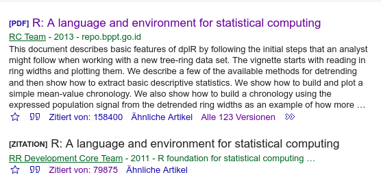

2 Rste Schritte
2.0.1 Warum R?
2.0.1.1 R ist beliebt
Abb. 2.1: Google Suchanfragen, links aus Deutschland und rechts weltweit
2.0.2 …das sind nicht alles Wissenschaftler!
…stimmt, der Trend zeigt sich aber auch hier:

2.0.3 … das sind doch alles nur Hilfeschreie!
…Möglich, aber dafür bekommt man für R auch leicht Hilfe.
Hier ein Beispiel von stack overflow:
2.0.4 Warum R?
2.0.4.1 Wir fassen zusammen:
R ist sehr beliebt und hat eine sehr aktive Community
2.0.4.2 Woran liegt das?
Das zentrale Argument:
- R ist Open Source und damit
- kostenlos
- von der Community erweiterbar
2.0.5 Warum benutzen wir dann nicht alle R?
- Mausnavigierte IDEs wirken erstmal intuitiver
- Man braucht vor allem am Anfang (ein bisschen) Frustrationstoleranz
- Die von der Community geschriebenen Erweiterungen (und über Strecken auch
base R) haben keine einheitliche Syntax
2.0.5.1 Aber:
Man findet sehr schnell Hilfe
Es gibt Paketsammlungen, die einen Großteil der Datenaufbereitung und -analyse vereinheitlichen (z.B. das
tidyverse)
2.0.6 R-Syntax Basics
Die Absoluten Grundlagen der R Syntax sind:
Zuweisungen und das
environmentFunktionen und Argumente
Indizierung
2.0.7 1. Zuweisungen und das Environment
Unter Zuweisung ist erstmal nichts anderes zu verstehen, als das Ablegen eines Zwischenergebnisses unter einem Namen, um es später weiterzuverwenden.
Auch wenn es andere Möglichkeiten gibt, ist die Folgende die lesbarste:
a_number <- 422.0.8 1. Zuweisungen und das Environment
Die Zahl 42 ist jetzt für weitere Verwendung im Environment abgelegt:
2.0.9 1. Zuweisungen und das Environment
Und wie die Zahl alleine weiterzuverwenden:
42^2## [1] 1764a_number^2 ## äquivalent## [1] 1764Jede dieser in grau unterlegten Zeilen nennt man auch eine Anweisung. R wird in der letzten Zeile angewiesen, den ‘Inhalt’ von a_number zu quadrieren. Dabei wird der dahinter durch das #-Symbol eingeleitete Kommentar ignoriert.
2.0.10 2. Funktionen und Argumente
Der Großteil des in R erstellten Codes besteht aus Funktionen.
Jede Funktion ist eine Sammlung an Anweisungen, die nacheinander augeführt werden sollen.
citation() ist ein sehr einfaches Beispiel für eine solche Funktion.
Was macht citation()?
citation() gibt in der Konsole aus, wie man R am Besten zitiert.

2.0.11 2. obligatorische und optionale Argumente
Die meisten Funktionen kommen aber nicht ohne Argumente aus.
Argumente können in obligatorische und optionale unterteilt werden.
Obligatorische Argumente sind meistens die Werte, auf deren Basis gerade die Operationen ausgeführt werden sollen.
Wenn man keins oder ein falsches obligatorisches Argument übergibt, zeigt R einen Fehler an!
optionale Argumente nennt man die, für die die Autoren der Funktion einen Standard vorgesehen haben. Das sind dann meist Stellschrauben, an denen das gewünschte Ergebnis genauer festgelegt werden kann. Werden diese Argumente nicht explizit gesetzt, wird einfach der Standard verwendet.
2.0.12 2. obligatorische und optionale Argumente
Ein Beispiel für eine Funktion, die obligatorische und optionale Argumente annimmt ist round().
Auf der Hilfeseite von round() finden wir folgendes1 :

Was ist hier das optionale Argument und wie erkennt man es?
2.0.13 2. obligatorische und optionale Argumente
x ist hier das obligatorische Argument (kein Standard durch ein =) angegeben
Wenn man round ohne ausprobiert, gibt es einen Fehler:
round()## Error in eval(expr, envir, enclos): 0 arguments passed to 'round' which requires 1 or 2 argumentsWen man eine Zahl übergibt, wird auf ganze Zahlen gerundet:
round(3.1415)## [1] 32.0.14 2. obligatorische und optionale Argumente
Das optionale Argument digits, ermöglicht dann, die gewünschte Anzahl der Nachkommastellen anzugeben:
round(3.1415, digits = 2)## [1] 3.14Sowohl 3.1415 als auch digits = 2 setzen Werte für Argumente!
Da die Funktion aber die zu rundende Zahl x an erster Stelle erwartet, ergibt der Aufruf das gewünschte Ergebnis.
2.0.15 Position von Argumente
R braucht also nicht unbedingt die Argumentnamen, wenn keine da sind wird die Reihenfolge interpretiert.
round(3.1415, 2) ## funktioniert, digits wird an zweiter Stelle erwartet## [1] 3.14Was versucht R, wenn ich die folgende Anweisung ausführe?
round(2, 3.1415)2.0.16 positionelle Argumente
R rundet die Zahl 2 auf 3.1415 (also 3) Nachkommastellen.
round(2, 3.1415) ## funktioniert, aber vielleicht nicht wie erwartetWenn man Argumente ohne Namen in falscher Reihenfolge übergibt, gibt es keine Fehlermeldung aber Blödsinn!
2.0.17 Operatoren
Einzelne Zahlen benutzt man aber ja quasi nie. Deswegen hier eine sehr praktische Funktion:
1:3## [1] 1 2 3Neben den klassischen Funktionen, die durch ein Codewort und Klammern erkenntlich sind, gibt es in R noch eine Reihe Operatoren, die auf den ersten Blick keine Funktionen sind.
Hier wird aber eigentlich `:`(1,3) ausgeführt, das Funktionsschema gilt also auch hier. `:`(1,3) ist nur schrecklich schlecht lesbar und viel zu viel zu tippen.
2.0.18 3. Indizierung
Da wir jetzt aber erste Vektoren mit mehr als einem Element erstellen können, gehen wir zu nächsten Part, der Indizierung über.
In R lassen sich Elemente eines Objektes auf viele verschiedene Arten aufrufen, am Ende laufen diese aber auf den [], den [[]] und den $-Operator hinaus.
Für Vektoren reicht erstmal der []-Operator.
2.0.19 3. Indizierung
Das einfachste Beispiel ist der Versuch, den 3. Wert aus einer Zahlenreihe ausgeben zu lassen.
Dafür erstellen wir zuerst die Zahlenreihe von 10 bis 15 und speichern diese im Environment
Wie mache ich das?
eine_reihe_von_zahlen <- 10:152.0.20 3. Indizierung
Jetzt kann ich den []-Operator benutzen, um den 3. Wert anzeigen zu lassen:
eine_reihe_von_zahlen[3]## [1] 12Und fertig. So einfach.
2.0.21 3. Indizierung
Der []-Operator kann aber noch viel mehr. Ich kann zum Beispiel eine Sequenz übergeben, um eine Reihe von Zahlen ausgeben zu lassen:
eine_reihe_von_zahlen[1:3]## [1] 10 11 12Der erste Wert ist die 10! der Index für die erste Stelle ist also die 1 (im Gegensatz zu Python z.B.)!
Eine weitere Möglichkeit ist die ausschließende Indizierung. Mit einem - gibt man an, dass einen alle außer der angegebenen Stelle interessieren.
eine_reihe_von_zahlen[-3]## [1] 10 11 13 14 152.0.22 logische Indizierung
Der []-Operator kann außerdem benutzt werden, um über logische Operatoren Werte zu indizieren.
Die einfachsten sind hier:
1 == 2 ## ist 1 gleich 2
1 != 3 ## ist 1 ungleich 3
1 < 4 ## ist 1 kleiner als 4
2 >= 1 ## ist 2 größer gleich 1## [1] FALSE
## [1] TRUE
## [1] TRUE
## [1] TRUE2.0.23 3. logische Indizierung
Diese Operatoren kann ich auch auf Vektoren anwenden:
eine_reihe_von_zahlen>11## [1] FALSE FALSE TRUE TRUE TRUE TRUEUnd kann das Ergebnis auch mit dem []-Operator kombinieren:
eine_reihe_von_zahlen[eine_reihe_von_zahlen>11]## [1] 12 13 14 152.0.24 Datenformate in R
Bei der letzten Operation haben wir zwei Datenformate kennengelernt:
logical, eine binär-logische Angabe undnumeric, alle ganze und (darstellbare) rationale Zahlen
Jetzt kennen wir schon 2 der 3 wichtigsten einfachen oder atomic Datenformate in R
2.0.25 Datenformate in R
Neben Zahlen muss R aber natürlich auch Text verarbeiten können. Dies geschieht über das character-Datenformat.
Wie könnte ich versuchen, ein character-Objekt mit dem Inhalt “Ich bin ein String” anzulegen?
ein_toller_character <- "Ich bin ein String"2.0.26 Datenformate in R
Diese einfachen Datenformate haben eine Hierarchie, die man so darzustellen versuchen könnte:
logical < numeric < character
Um uns das zu verdeutlichen, lernen wir noch eine neue Funktion:
c()- die Vektor-Funktion. Mit ihr können wir Vektoren erstellen und Werte zu bestehenden Vektoren hinzufügen.
2.0.27 Datenformate in R
logical_vector <- c(TRUE, TRUE, FALSE)
logical_vector## [1] TRUE TRUE FALSEc(logical_vector,1)## [1] 1 1 0 1Die logischen Werte wurden in Zahlen umgewandelt.
2.0.28 Datenformate in R
Was passiert wohl, wenn wir eine 1 und einen character hinzufügen?
c(logical_vector,1,'ein character')## [1] "TRUE" "TRUE"
## [3] "FALSE" "1"
## [5] "ein character"Die logischen Werte und die Zahl wurden in character umgewandelt
2.0.29 Datenformate in R
Die atomics haben eine klare Hierarchie!
Rückgängig machen lässt sich das durch as.logical, as.numeric und as.character. Aber Vorsicht, so können auch leicht fehlende Werte, durch NA gekennzeichnet erzeugt werden:
ein_umzuwandelnder_vektor <- c('a',1,15,TRUE)
as.numeric(ein_umzuwandelnder_vektor)## Warning: NAs introduced by coercion## [1] NA 1 15 NA2.0.30 Datenformate in R
as.numeric(ein_umzuwandelnder_vektor)## Warning: NAs introduced by coercion## [1] NA 1 15 NAWarum fehlt auch der letzte Wert?
Weil das TRUE inzwischen ein character ist.
ein_umzuwandelnder_vektor## [1] "a" "1" "15" "TRUE"2.0.31 Datenformate in R
Natürlich gibt es auch komplexere, mehrsimensionale Datenformate in R, um die kümmern wir uns dann nach der Pause.
Für über eine Übersicht über mehr mögliche geoms lässt sich das ggplot2-cheatsheet empfehlen.↩︎